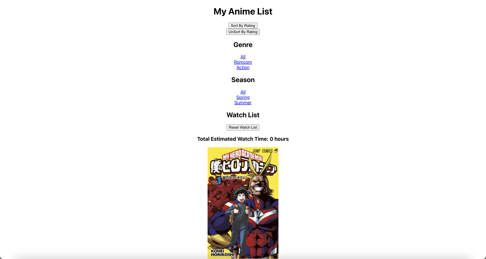

Development

Context
The goal is to learn how to develop an interactive interface,
use interface components,
and tie the components to an internal data state.
To get comfortable with React by creating a list-based interface!
Features to Include
At least 2 filtering categories
At least 1 sorting feature
An aggregator section on the same page displaying: Items you added to
the aggregator
Aggregation of a property: total time, cost, votes, etc., but NOT the
total number of items
At least 12 item cards, each displaying:
Item image
Categories that your filter uses
Field(s) that your sort uses
Property you are aggregating
A button that adds to/removes from the aggregator
.
Goal and Value of the Application
the goal of the application is to browse anime through the sorting and
filter options and be able to keep track of the anime that you have
watched by adding to watchlist through the "Add to WatchList!" button
Usability Principles Considered
My application should be able to handle
any combination of filters, and all filters and sorting methods should
work together without breaking the page
After Filtering there is an “All" catagory to unfilter
After Sorting, there is an unsort Button
After adding to your watch list, there is a reset watch list button
Organization of Components
AnimeCard is a component for each anime
How Data is Passed Down Through Components
Data is passed down through components since there is a mapping function
that goes through the json list and also passing in props, that is used
to alter the current states
How the User Triggers State Changes
The user triggers state changes by the clickable links and buttons
States include totalWatchTime names genre season data